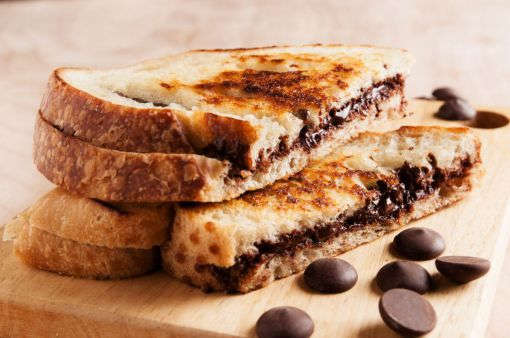
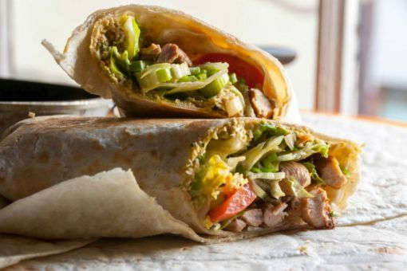

10 Places in Bangalore For Delicious Food Under 200 Rupees
Choclate Sandwhich @Hari Super Sandwhich, Jaynagar
Even
though they serve sandwiches in different varieties, it’s the chocolate
sandwich that has put Hari Super Sandwich on the map for food lovers.
The sandwhich is a must try and at 40 rupees, definitely no one will be
complaining. HolidayIQ Traveller Prashant Kr shares, “The restaurant
and places of food can be found in every corner of the city. You get
what you want. Delicious Indian, Italian, French, Continental, Chinese.
Just name it you get it and upon all the prices are very reasonable and
cleanliness at its best. Delighted to be here and hoping to stay here
permanently.”

Idlis & Filter Coffee @ Brahmins, Basavanagudi
With
extremely affordable rates for kesari bath and idlis ranging from 30 to
50 rupees, it is totally worth it! It is a perfect breakfast restaurant
that can give your day a perfect start. The coffee, idlis and kesari
bath are quite famous here. To relish the best idlis and other
traditional street food in Bangalore, you must be at Brahmin’s Coffee
Bar which is located at Basavanagudi in Shankarpuram near Shankar Math.
The hot steaming idlis here are so soft that you just can’t stop at one
or two.
Parathas @ Bobby Da Dhabba, Ulsoor
Having
a limited menu, this place is known for great food in less cash. If you
want to have the best Punjabi vegetarian dish. The parathas are very
budget-friendly and you can eat to your taste buds content! “There are
several lookalike restaurants in Ulsoor, but you can find this place by
seeing the long queue of people waiting for their turn,” says HolidayIQ
Traveller Jitin. The aloo gobi, dal makhani and the lassi will
remind you of dhabas in Punjab.
Poori And Benne Masala Dosa @CTR, Malleshwaram
If
you ever want to having ghar ka khana within budget, then blindly
follow the map to reach this place.Located in Malleshwaram, a meal will
cost you not more than 150 rupees. HolidayIQ Traveller Megha says,
“Bangalore has a variety of options when it comes to food. Another
place is the CTR. If you are a dosa lover, then this is a place that
you should never miss. Try the butter masala dosa and idlis here.”
Some Delectable Street Food @ VV Puram
The
meals served are easy on the pocket and so one must atleast carry 200
rupees. Thindi Beedhi is one place that’s always crowded with foodies
during evenings. Some of the best eateries here include VB Bakery that
sells honey cakes and cream puff, Shivanna Gulkhand Center that is
popular for its gulkhand with ice-cream and Ramu Tiffin centre for its
ghee masala dosa. HolidayIQ Traveller Satyendra Dwivedi says, “Enjoy
south Indian veg food at VV Puram.” Adds HolidayIQ Traveller Rahul
Ghelani, “We had visited the famous ”Khao Gali’ in Bangalore. It was a
fabulous experience as we enjoyed having dishes from chatpatta chaats
to idli.”
Masala Dosa @ Vidyarthi Bahvan, Gandhi Bazaar
This
place is really easy on the pocket, with everything in the menu rated
less than Rs 50. It is one of those restaurants in Bangalore that needs
no introduction to the local crowd. The chrispy Masala Dosa of
Vidhyarthi is very famous which is complimented by the delicious
chutney. Other popular food items here include – Poori Saagu, Chow Chow
Bath and of course Idly Vada. Cost for one would be around 100 rupees.
HolidayIQ Traveller Mayank Mahajan says, “Go to the old Indian market
Gandhi bazaar for traditional shopping. In Gandhi bazaar, there is also
a famous Big Bull Temple which is centuries old. Do not miss to try
South Indian food at Vidyarthi Bhavan. It is part of Bangalore
folklore.”
Sumptuous South Indian Meal @ MTR, Lalbagh
A
sumptuous south Indian Meal would cost you only by 200 rupees.
HolidayIQ Traveller Ujjawal Kumar says, “Near Lalbagh Botanical Garden
there is a MTR restaurant, which is heritage hotel. Good South Indian
food but you need to wait in queue, which is worth it.”
Chicken Dishes @ Kamats Palate Corner, Sampangi Rama Nagar
If
you want to have the best chicken dishes without worrying about the
fine-dine experience, then this is your next stop.The cost is steep at
200 rupees for one but so is the taste! HolidayIQ Traveller Babu says,
“I like the food in Kamat Palate Corner.”
Shivaji Military Hotel, Jayanagar
This
place serves one of the best Biryanis in Bangalore. Make sure to reach
early as it gets filled up real soon.The cost for a plate of mutton
biryani is 175 rupees. HolidayIQ Traveller Zuyyina says, “The food is
really good. Most of the Indian dishes are available at any time.”
Khan Saheb Grills & Rolls, Indiranagar
Serving
both veg and non-veg, their ‘Best of’ list features mixed vegetable
tikka roll, mutton buna, babycom tikka roll and many more. Each roll
costs not more than 120 rupees and it is more than satisfying! Says
HolidayIQ Traveller Chetna Raj, “Food is excellent. Bangalore is a
great place that serves yummy food, right from Empire to Indiana
burgers, rolls to kababs and parathas.”
